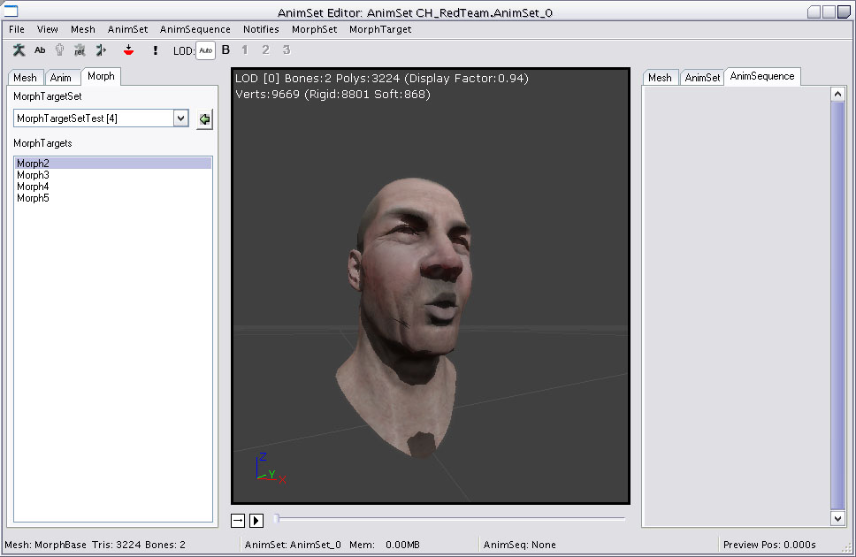
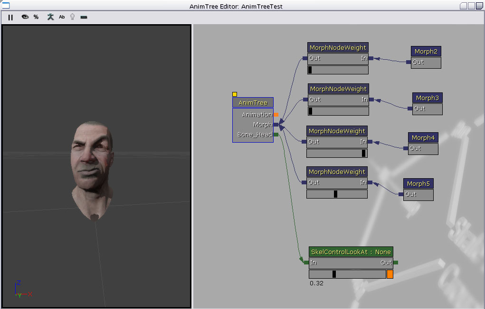

UDN
Search public documentation:
MorphTargetsJP
English Translation
中国翻译
한국어
Interested in the Unreal Engine?
Visit the Unreal Technology site.
Looking for jobs and company info?
Check out the Epic games site.
Questions about support via UDN?
Contact the UDN Staff
中国翻译
한국어
Interested in the Unreal Engine?
Visit the Unreal Technology site.
Looking for jobs and company info?
Check out the Epic games site.
Questions about support via UDN?
Contact the UDN Staff
Morph Target(モーフターゲット)
ドキュメントの概要：静的 Morph Target のインポート、アニメーション ツリーへの追加およびコードからのコントロールについての概要。 ドキュメントの変更ログ：Shane Caudle により作成、Lina Song により管理。概要
Morph Target は、リアルタイムでメッシュを修正する一つの方法ですが、ボーンベースの骨格アニメーションよりもコントロールがあります。静的 Morph Target は、少し何らかの方法で異なっている既存のメッシュのバージョンです。例えば、3 D モデリング問題でキャラクターに「笑っている」バージョンを作成し、それを「笑う」 Morph Target としてインポートするとします。その後ゲーム中にこの Morph Target を適用して、フェイスの頂点を修正して、キャラクターに笑わせることができますが、各頂点の動き方には非常に大きなコントロールが働きます。 UnrealEngine 3 における Morph Target は、加算方式で適用されます。つまり、口の周りの頂点のみが修正されるところに「笑う」ための Morph Target が一つあり、目の周りの頂点にのみ影響する「眉を上げる」ための別の Morph Target が一つある場合、これらの両方の Morph Target を適用すると、笑いと眉の両方の動きが生じます。これにより、例えば、複数のターゲットを一緒に組み合わせて、様々な顔のポーズを作成できます。 Morph Target と従来の骨格アニメーションは、共に機能します。 Morph Target は、ボーン変形が適用される前に、骨格メッシュに適用されます。 Morph Target は、メッシュの参照ポーズ メッシュに基づいて作成し、次に、インポートするときに、頂点をベース メッシュと対照して、異なるもののみを保存します。Morph Target をインポートする
3D モデリング パッケージで、参照ポーズに新しい Morph Target を作成したいメッシュを取り、希望通りにそれを修正します。次に、そのメッシュを新しい .PSK ファイルとしてエクスポートします。 UnrealEd で、AnimSets ビューアを開けます。 Morph Target は、 MorphTargetSet に保存されています（これは、 AnimSequences および AnimSets と非常に似た方法で機能します）。左のパネルに _Morph _ タブが見えます。このスイッチを入れると、現在ロードされている MorphTargetSets を示すコンボが現れ、次に、そのセットの MorphTargets を示す下にリスト ボックスが現れます。
.PSK ファイルを Morph Target としてインポートするためには、新しい Morph Target を追加したい MorphTargetSet をまず選択します。ファイル メニューから [New MorphTargetSet](新しい MorphTargetSet) を選択して、新しい MorphTargetSet を作成できます。次に、 Mesh (メッシュ) タブに戻り、 Morph Target の骨格メッシュを選択します。最後に、ファイル メニューで、[Import MorphTarget](Morph ターゲットをインポートする)を選択します。インポートする PSK ファイルと新しい Morph Target に与える名前を指示するように求められます。インポートが成功すると、 _ Morph _ タブの下に MorphTargetSet のためのリストの中に新しい Morph Target が見えます。複数のモーフ ターゲットを (モーフターゲット名を入力するステップを省略して) インポートしたい場合は、[Import MorphTarget Using File name] (ファイル名を使ってモーフターゲットインポート) を選択します。この場合、インポートしたファイル名がモーフターゲット名に使われます。 LOD レベルが必要な数より多く骨格メッシュに含まれる場合、それらの LOD のモーフ ターゲットもそれぞれインポートする必要があります。これを行なうには、[File] (ファイル) メニューの [Import MorphTarget LOD] オプションを使用します。LOD 0 のモーフ ターゲットをベース骨格メッシュの LOD 0 のメッシュから生成しなければならないのと同様に、新しいモーフターゲットの LOD レベルもベース骨格メッシュの同じ LOD から頂点順に生成し、適切に合わせる必要があります。ベースメッシュに LOD が複数存在しても、それらのモーフターゲットが存在しない場合は、メッシュが下位の LOD に下がったときにモーフターゲットが適用されない点に注意してください。モーフ ターゲットのアニメーション
(Maya 8.5 (2008、2009) でサポートされています) ActorX でカーブデータを PSA ファイル形式でエクスポートし、アニメーションとしてインポートすることができます。この場合、アニメーションに必要なモーフターゲットを MorphTargetSets に含める必要があり、そのモーフターゲットの名前は Maya ファイルの BlendCurve の名前と同じでなければなりません。例えば、Maya ファイルの BlendCurve の名前が "blink" で、これをアニメーションとしてエクスポートする場合、MorphTargetSet (SkeletalMeshComponent にリンクされます) に "blink" という名前のモーフターゲットがなければ、アニメーションは機能しません。アニメーションを AnimSetVeiwer でプレビューするには、目的の MorphTargetSets を PreviewMorphTargetSets に追加します。 これにより、インポートしたアニメーションが AnimTree で AnimNodeSequence やブレンドに使用できるようになります。同じモーフターゲットを変化させるアニメーションが複数ある場合は、ウェイトが加算されます。Morph Target をプレビューする
[Morph Target] タブにはモーフターゲットのリストとスライダがあり、モーフターゲットのスライダを使ってウェイトを変更することができます。Morph Target の制御
モーフの制御は、FaceFX、Matinee、またはコードを使用して行うことができます。アニメーション ツリーに Morph Target を追加する

一度に複数の Morph Target を一緒にブレンドすることを可能にするためには、アニメーション ツリーを使用します。アニメーション ツリー エディタで、_ Morph _ とラベルされたルート「アニメーション」ノードに対する入力が見えます。これは、様々なタイプの Morph ノードを接続するためのものです。 Morph ノードには 2 つの主要なタイプがあります。- Morph Pose - これは、 MorphTargetSet からの静的 Morph Target です。
- Morph Weight - これは、子ノードが適用される「強さ」をコントロールするために使用するノードです。このタイプのノードには、上にスライダーがあり、エディタでウェイトを修正することができます。結果をご覧ください。
Matinee でのモーフ ターゲットの使用
Matinee でモーフを使用するには:- AnimTree (アニメーション ツリー) を作成し、MorphNodeWeight (モーフノード ウェイト) を経由してMorphPoses (モーフポーズ) が モーフトラックに入るようにします。
- MorphNodeWeight に NodeName (ノード名) を与えます。マチネでこれを操作するときにこの名前が使用されます。
- AnimTree ビューアにモーフを表示します。これには、AnimTree を選択してその PreviewSkelMesh (骨格メッシュのプレビュー) と PreviewMorphSets (モーフセットのプレビュー) を設定します。
- [Add Actor] (アクタを追加) を右クリックして [Add SkeletalMeshMAT] (骨格メッシュ MAT を追加) を選択し、骨格メッシュをワールドに追加します。これにより、AnimTree が使用できるようになります。
- メッシュを選択し、そのプロパティで SkeletalMeshactpr/SkeletalMeshComponent/SkeletalMeshComponent に進み、AnimTreeTemplate と MorphSets をそれぞれ作成したオブジェクトに設定します。
- Matinee を作成し、メッシュの NewSkeletalMeshGroup (新規骨格メッシュグループ) を追加してそれを右クリックし、モーフウェイトを追加します。モーフウェイトを選択したら、そのプロパティの MorphNodeName セクションに、AnimTree にある MorphNodeWeight の NodeName を追加します。これでキーフレームを追加して、他の Matinee トラックのようにアニメーション化できるようになります。同時に複数の MorphWeight トラックを追加して合成することもできます。モーフのシーケンスをアニメーション化する場合は、1 つのモーフをオフにすると同時に他をオンにする必要があります。